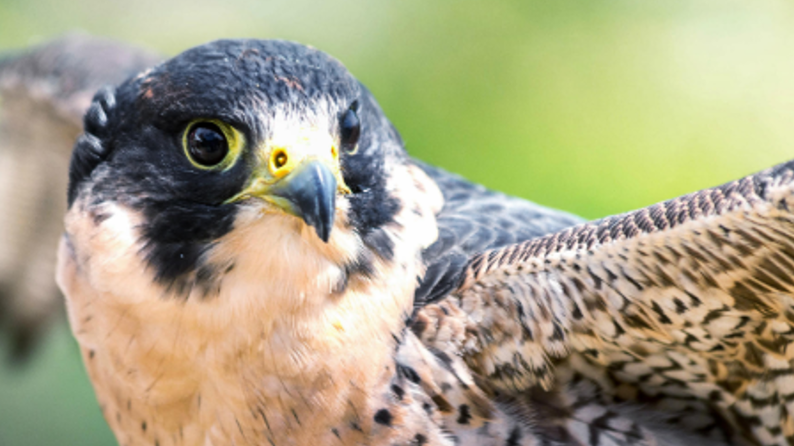
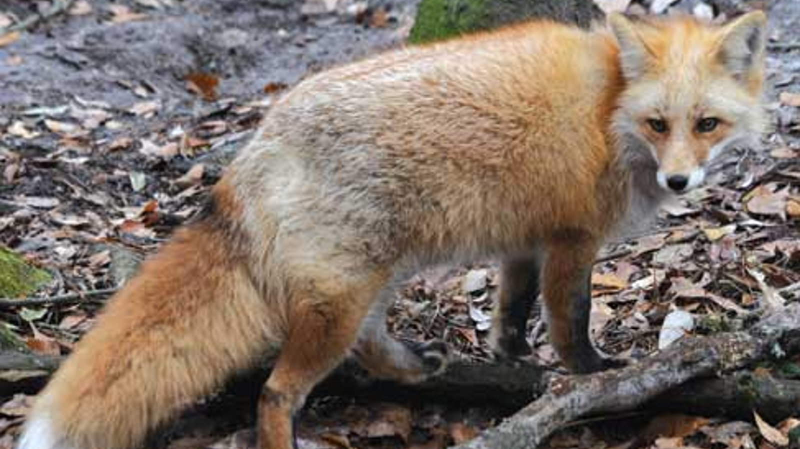
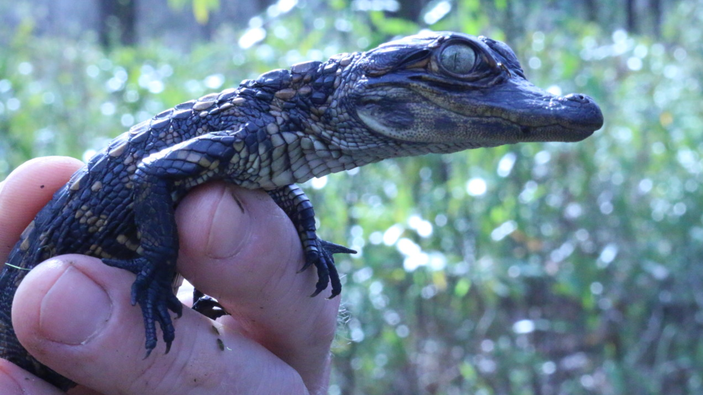

For all the hunters, fishers, and biologists of the world, South Carolina is the worst of the best places to visit to hunt/catch game or observe wildlife. While there are a respectable number of species to hunt, fish, and watch across the state, most of the more interesting species are walking a thin line between threatened and outright extinct. Take for instance the Loggerhead Sea Turtle, or Caretta caretta, which is listed as “Threatened” on the endangered species list. Once abundant across Atlantic, Pacific, and Indian oceans, the Loggerhead population has been on a steady decline due to incidents with fishing boats, loss of necessary nesting areas due to expansion of beach resorts, and, above all, ocean pollution. In terms of terrestrial animals, the American Peregrine Falcon, known scientifically as Falco peregrinus anatum, is classified as “Endangered” by the South Carolina Department of Natural Resources due to illegal hunting and interference by humans with nesting. Known for its incredibly fast diving speed- the fastest recorded dives exceed 200 mph- the Peregrine Falcon is an exceptionally incredible specimen of what nature has to offer, yet it has been hunted to near extinction in South Carolina for its feathers. Such magnificent animals that don’t directly interfere with human life, yet suffer as a result of human self-indulgence and lack of respect for nature.